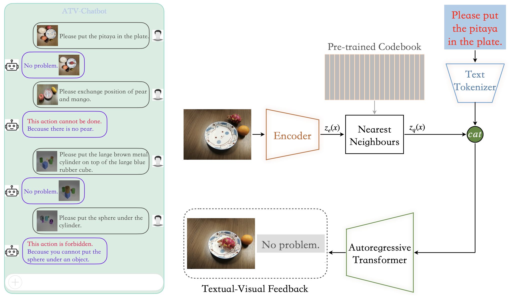
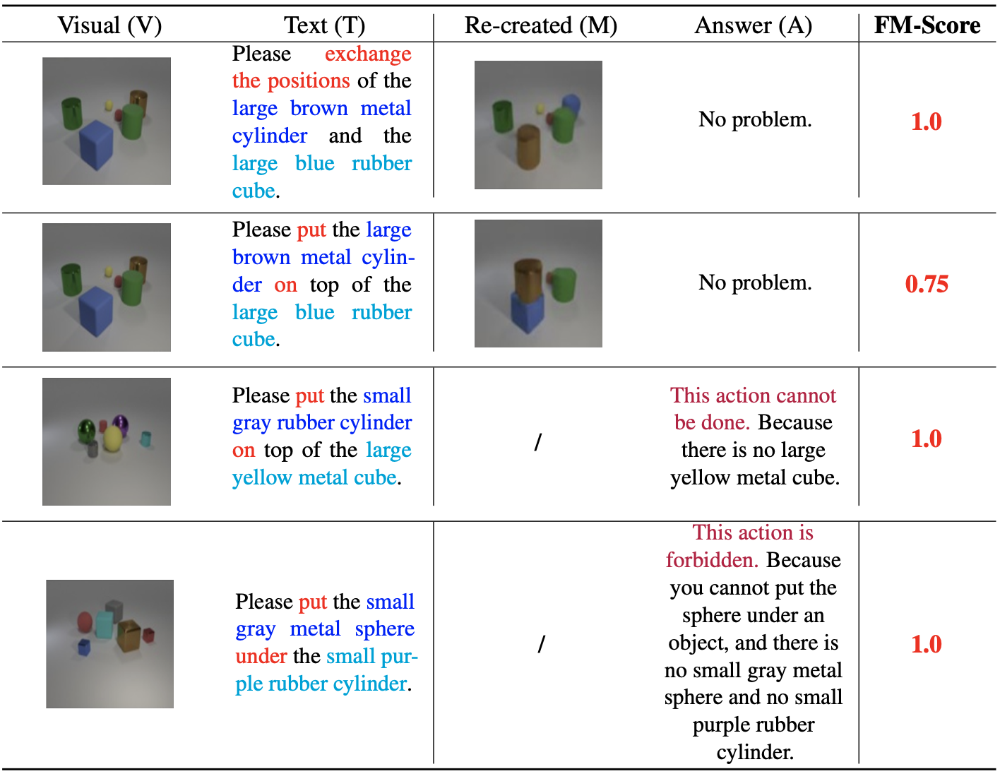

Accountable Textual-Visual Chat Learns to Reject Human Instructions in Image Re-creation
Zhiwei Zhang
134
*
Yuliang Liu
123
*
1
The Chinese University of Hong Kong
2
Huazhong University of Science and Technology
3
Centre for Perceptual and Interactive Intelligence
4
HyperEvol Research


Code and Model
Datasets